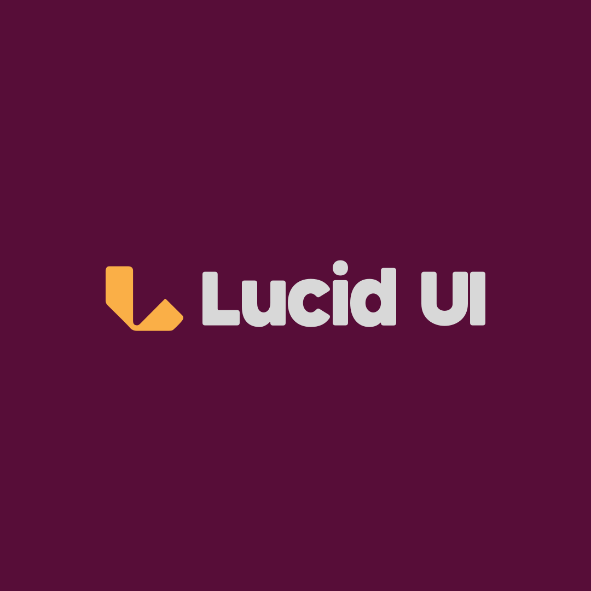

Lucid UI media
Official logos and the press kit. Please don't alter the marks.

Press kit
press/lucidui-press-kit.zip
Primary lockup
logo/avatar-wordmark.svg
Mark
logo/avatar.svg
Icon
logo/lucid-mark.svg